온천 거리
도심에서 2시간 거리에 있는 숨은 명소, 온천 거리. 시즌 오프인 이유도 있겠고, 이 날은 손님의 모습도 드문드문하였다.
Murder mystery / participant brief
폭설로 고립된 온천 여관. 남탕 노천탕에 떠오른 시체. 다섯 명의 용의자는 각자의 소지품과 결백을 해명해야 한다.
| 발견 시각 | 24시 30분 즈음 |
|---|---|
| 현장 | 남탕 노천탕 |
| 직접 단서 | 후두부 출혈, 근처의 피 묻은 돌, 사용 흔적 없는 소음기 달린 권총 |
| 용의자 범위 | 종업원은 알리바이가 있으며, 남은 용의자는 투숙객과 출입자 다섯 명 |
도심에서 2시간 거리에 있는 숨은 명소, 온천 거리. 시즌 오프인 이유도 있겠고, 이 날은 손님의 모습도 드문드문하였다.
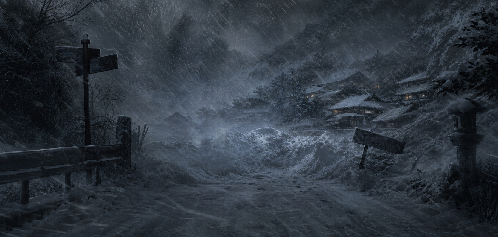
저녁부터 심야 시간에 걸쳐 눈보라가 매섭게 몰아쳤고 거리 전체가 고립되었다. 그 후, 어느 온천 여관의 노천탕에서 몸집이 작은 중년 남성의 시체가 발견되었다.
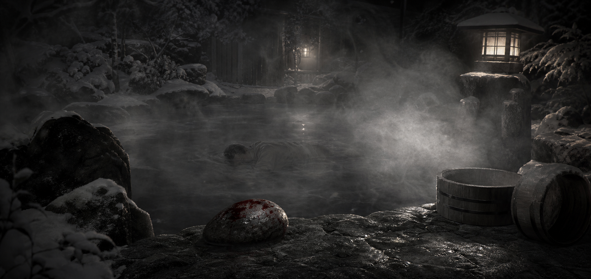
남성은 후두부에서 피를 흘리며, 엎드린 상태로 욕탕 물 위에 떠있었다고 한다. 근처에는 피가 묻은, 럭비공만 한 크기의 돌이 나뒹굴고 있었다. 입욕 상태에서 살해당한 것은 명백하다.
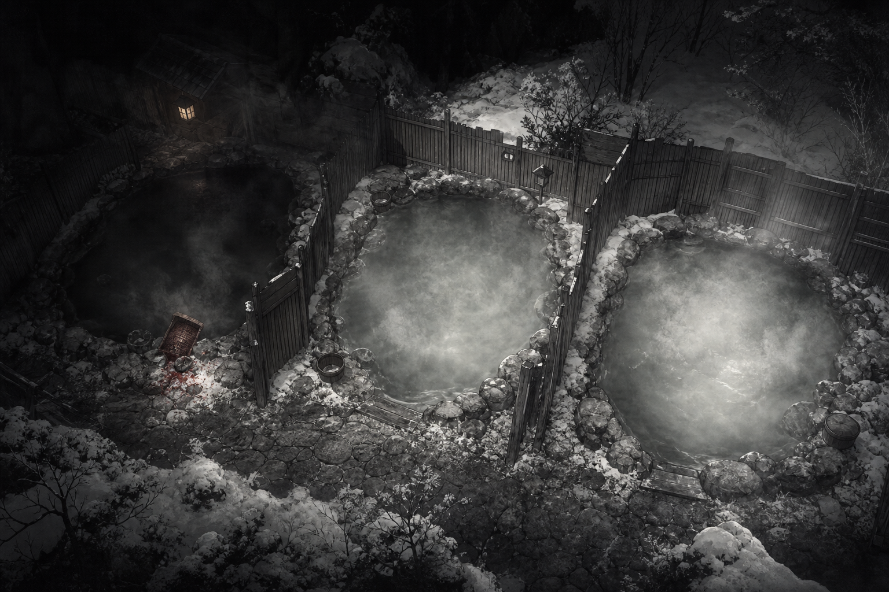
그는 ⌜이정명⌟이라는 이름으로 체크인을 한 것 같지만, 자세한 내막은 불명. 최초 발견자는 여관의 종업원으로, 발견 시각은 24시 30분 즈음이었다고 한다. 이 온천 여관은 남탕, 혼탕, 여탕의 순서로 노천탕이 배치되어 있으며, 이정명이 발견된 곳은 남탕이었다.
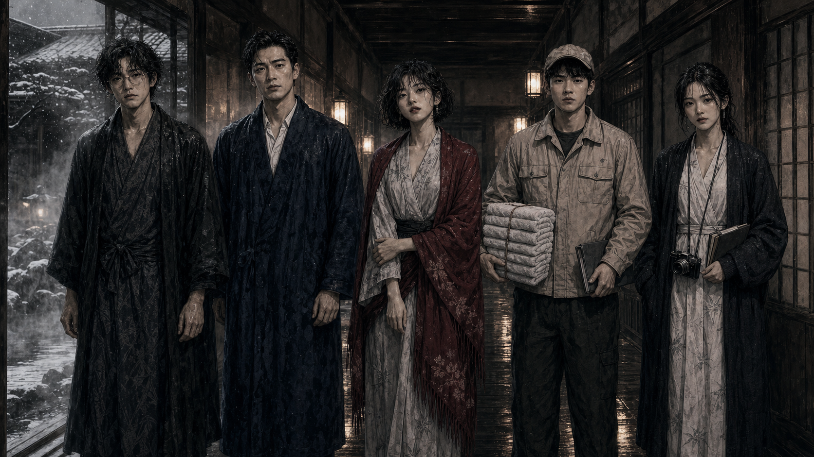
종업원에게는 확실한 알리바이가 있기 때문에, 용의자는 투숙객인 소설가, 편집자, 온천 문필가, 근처 극장의 댄서, 납품 때문에 자주 출입하던 물수건 업자 등 다섯 명뿐. 이 중에서 물수건 업자를 제외한 나머지 네 명은 머리카락과 목욕 가운이 젖어 있었다.
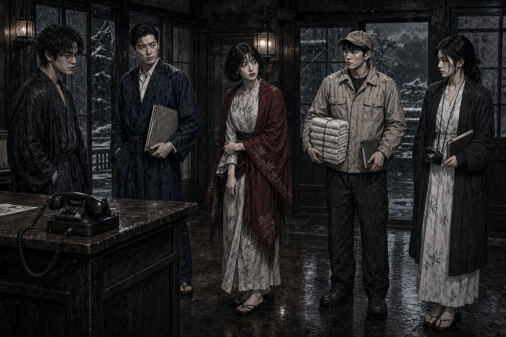
여관 주인은 바로 경찰 당국에 신고했지만, 거리는 폭설로 막혀있어 경찰 관계자가 도착할 때까지 몇 시간은 걸린다. 그 사이에 범인이 증거를 은폐하는 건 아닐까? 과연 살인범과 같은 장소에 있는 것이 안전한 것일까?
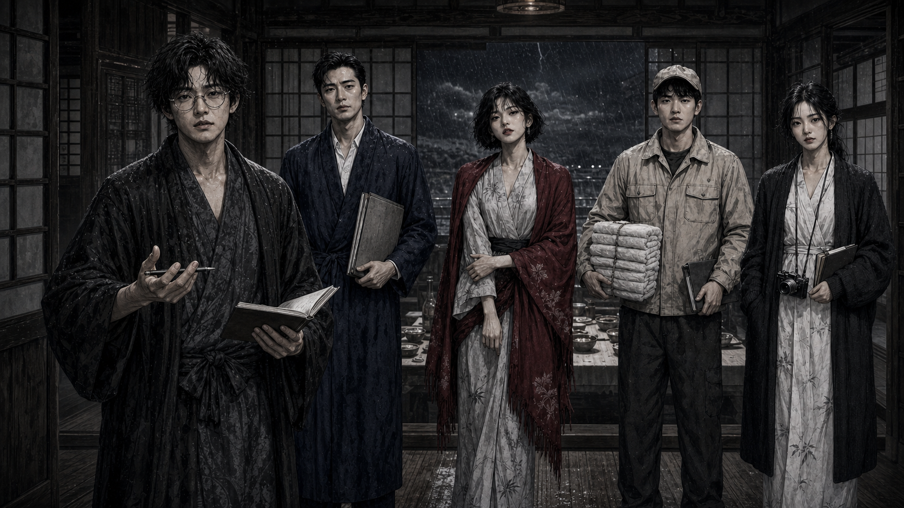
서로가 서로를 의심하는 가운데, 소설가가 한 가지 제안을 한다. 일반인이 마음대로 판단하여 현장을 망칠 수는 없다. 하지만 이대로 범인을 내버려 두는 것도 안 된다.
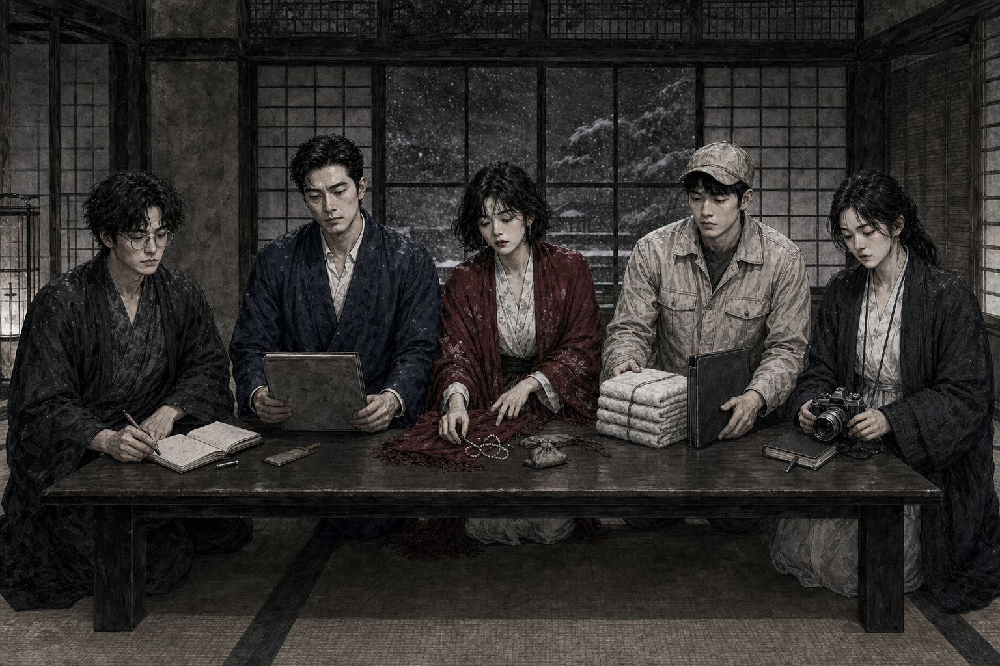
그렇다면 각자가 자기 소지품을 순서대로 공개하고, 자신의 결백에 대해 설명해 나가는 것은 어떨까? 이를 바탕으로, 다 함께 범인에 대해 추리해 나가는 것은 어떨까? 반대하는 사람은 없었다. ⌜해명해야 할 소지품⌟은 여관 주인이 선택하기로 했다.
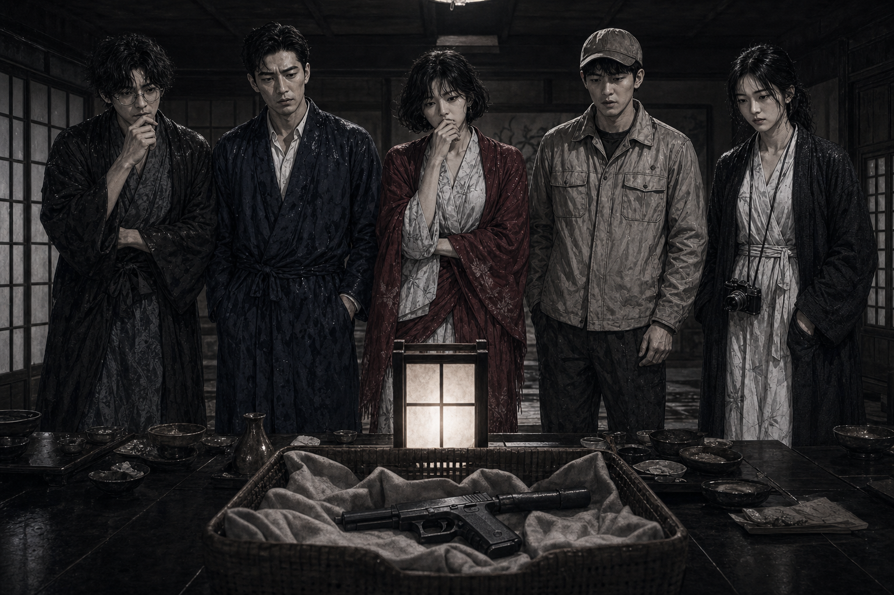
연회장으로 장소를 옮긴 사람들에게, 종업원으로부터 또 다른 사실이 밝혀진다. 살해당한 남자의 탈의 바구니 안에서 사용한 흔적이 없는, 소음기가 달린 권총이 발견되었다는 것이다. 남자의 죽음과는 어떤 관계가 있는 것일까?
혼란과 긴장으로 표정이 굳어지며, 용의자 다섯 명은 필사의 해명을 시작한다.
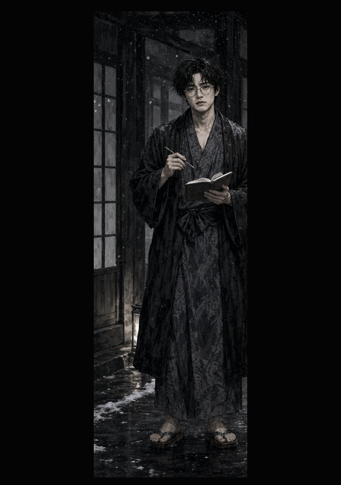
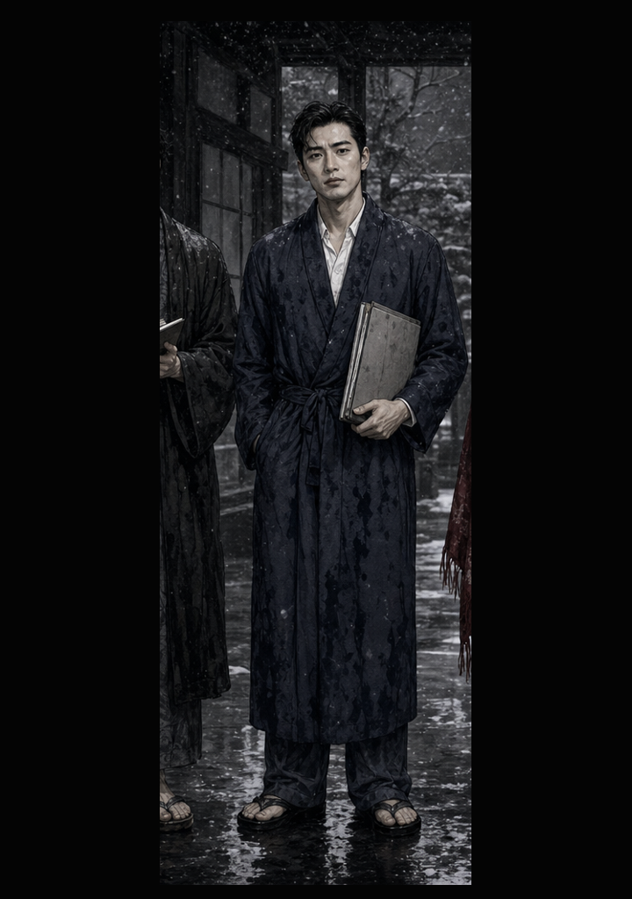
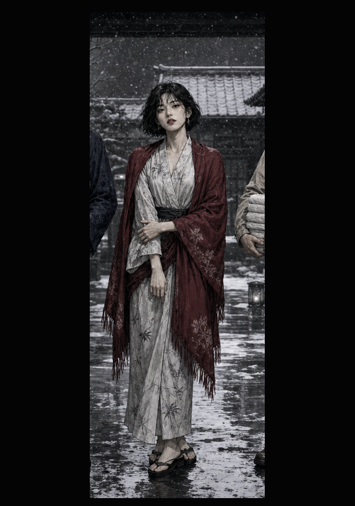
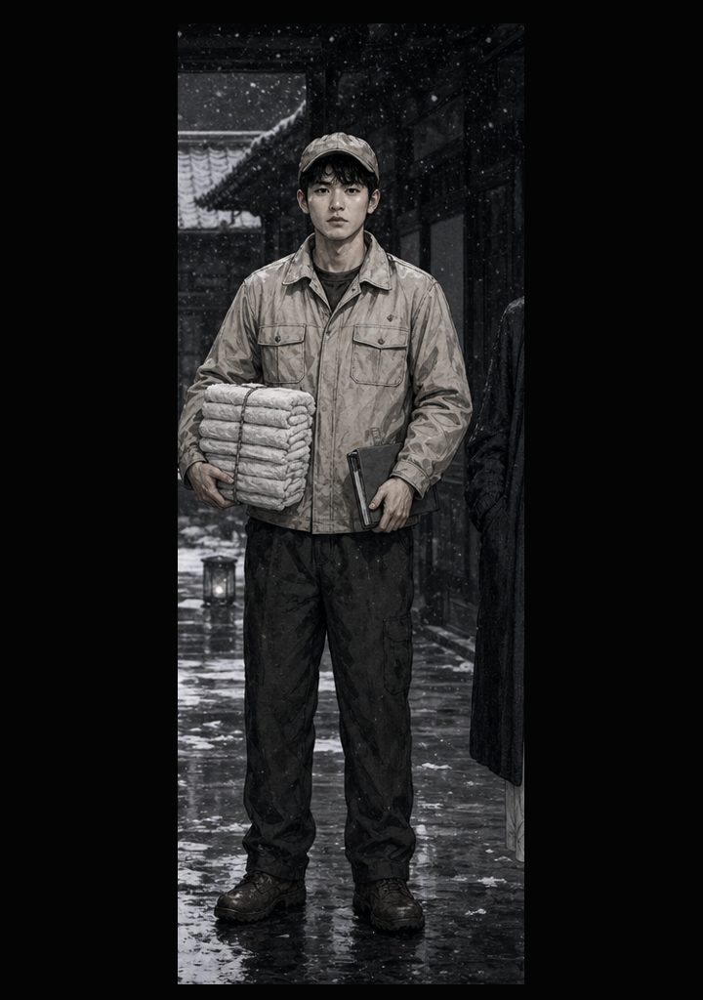
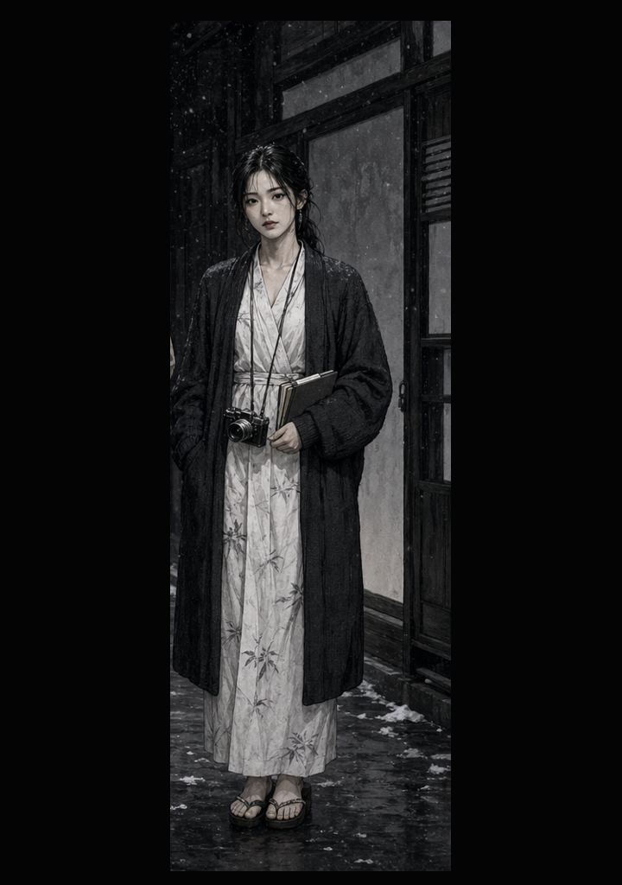
그러나 소지품을 설명하는 사람은 거짓말을 할 수 있다. 다섯 명의 해명 사이에서, 피 묻은 돌과 쓰이지 않은 권총의 의미를 찾아야 한다.